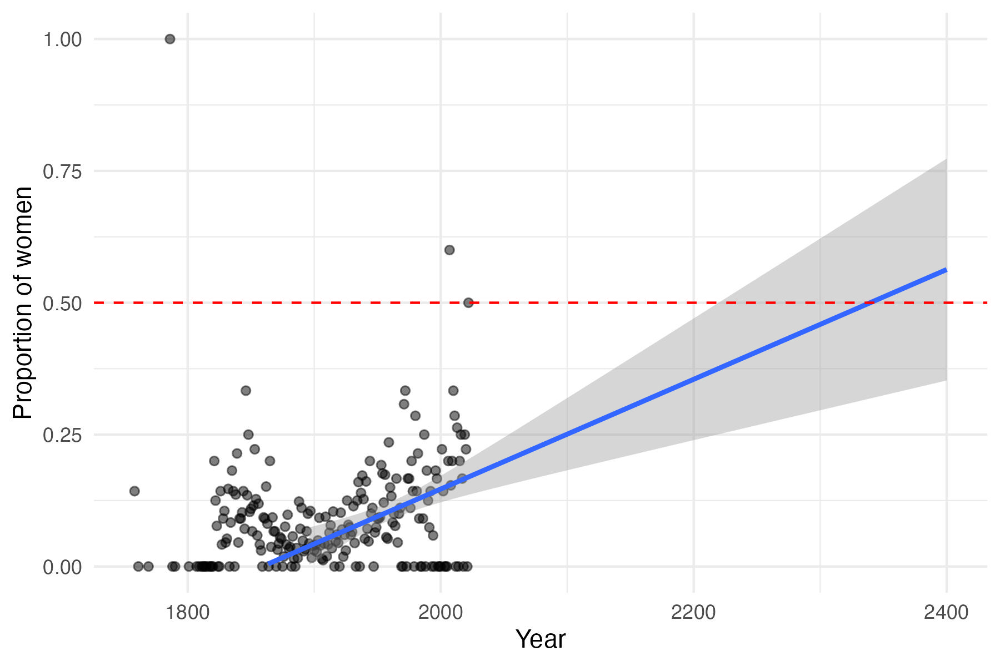
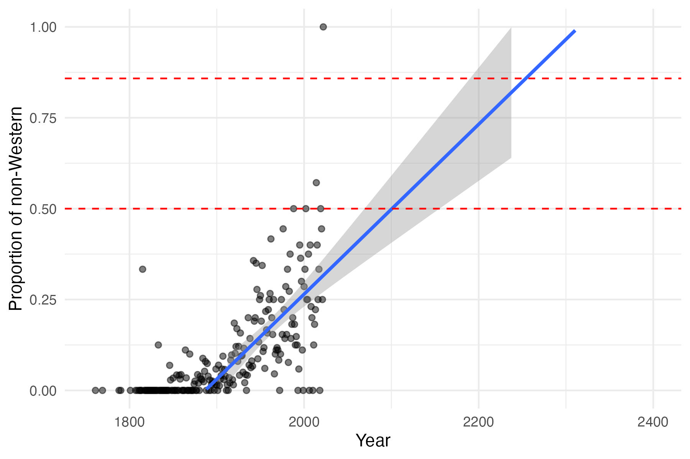
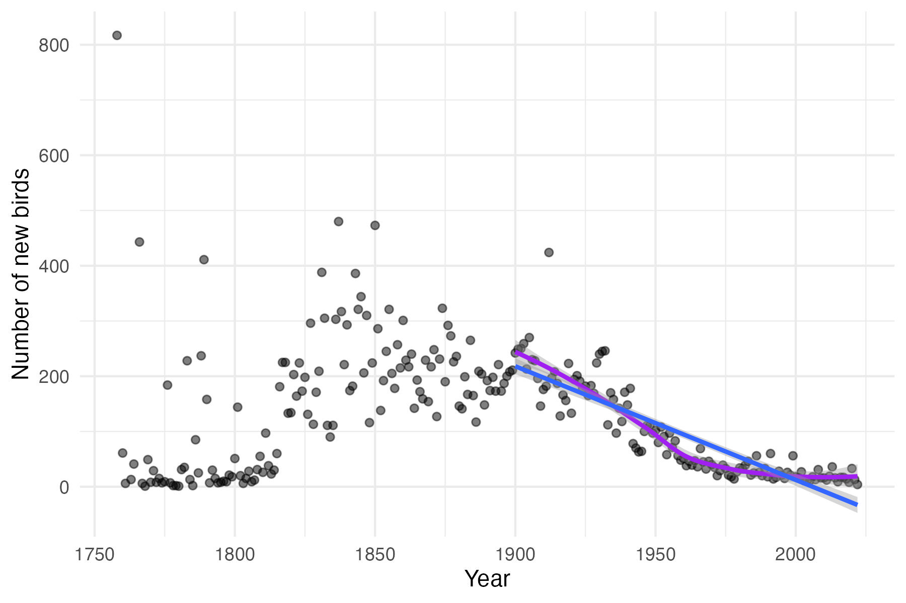
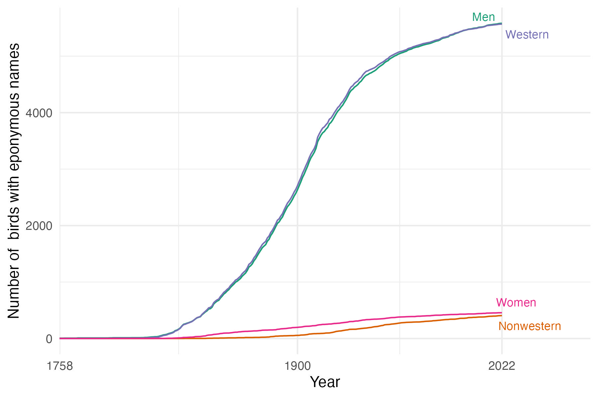
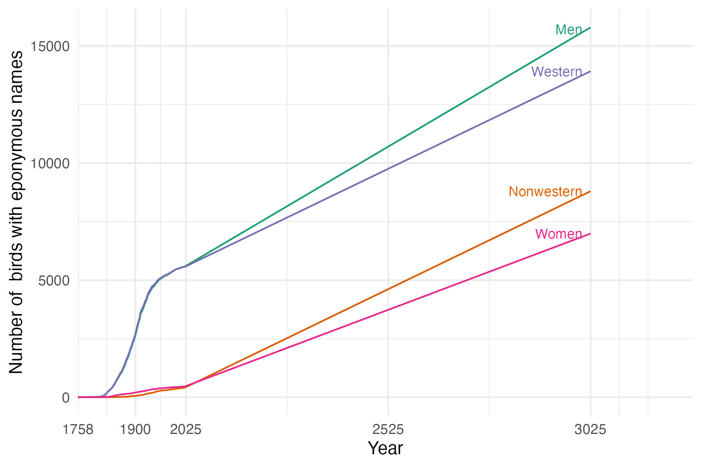

Today I saw a post on bluesky from the Zoological Journal of the Linnean Society about a new paper by Dr. George Sangster on eponyms in birds: naming birds after people. This is an issue I’ve been curious about for some time, partly due to the related issue of naming awards after people (see here). Issues that come up in these areas are 1) should we name organisms after people who did awful things? 2) how extensive are the biases in who gets species named after them? 3) what are the effects of either of the above on recruiting and retainng people in the field? and 4) how will changes in naming practices, both moving forward and (more controversially) changing existing names affect the above three points? The paper represents a tremendous amount of careful work to address the second question, including an analysis of how the biases have changed over time.
The paper is well worth reading and contributes greatly to this discussion. However, I was a bit surprised by one of its conclusions:
“Importantly, there is no need for drastic changes in naming practices, because the desired changes (greater representation of women and non-western people) are already taking place (and have been for several decades).”
The paper does identify trends in this direction, but I was curious about how long the changes would require. Dr. Sangster generously released the analyzed data as a supplemental file, so I downloaded it to run some analyses. It already had some linear regressions showing changes in representation since 1900; I threw the file into R to do similar analyses, but extrapolating to the future.
1 Proportionality in new names
The first question is how long with current trends it will take for a proportional fraction of the eponymous names to be named after people in the different groups. For gender, if we limit the population of potential namesakes to women and men only, and assume they are equal frequencies in the population, parity is at 50%. For Western vs non-Western, one standard would also be 50%; a better one might be to use proportion of the world population that is Western vs non-Western (though this has also changed over time). Using populations sizes from here, and adopting the definition of Western the paper seemed to use, 85.8% of people are non-Western.
Using these thresholds and linear regression, with a 95% confidence interval:
- Year when half of NEW eponyms are named for women: 2340 (2220, 2662)
- Year when half of NEW eponyms are named for non-Western people: 2101 (2070, 2156)
- Year when a proportional number of NEW eponyms are named for non-Western people: 2255 (2191, 2367)
So, it will take 315 years to have equal representation of women in new eponyms, and 230 years to have proportional representation of non-Western people, under the current yearly increase in representation in names taxonomists choose. This is about as far in the future as Linneaus was in the past. That’s a long time.
Below are some plots showing the extrapolations. Clearly, extrapolating out this far is silly: but the big point is that even with current trends it’s going to take a very, very long time.


2 Proportionality in all names
A different question is how long it will take for half of the eponymous bird species to be named after women, and how long it will take for the proportion of eponymous names for non-Western people to be equal to their population. One issue is that birds are a well-studied group: the number of new species being described is declining (though not an argument for lack of a need for more taxonomy):

An extrapolation into the future quickly results in having a negative number of newly described species in future years. I instead used a more optimistic assumption that the future will resemble the 10 year average of the most recent years in the dataset, so with 16.7 species described per year.
We can see how the number of species named after women, men, Westerners, and non-Westerners has changed over time up to the present:

And then we can continue the trend into the future, incorporating the increasing proportion of species named for women and non-Western people but also the trend of a greater proportion of eponyms overall (which I was surprised to learn about in the original paper). I ran the model for a thousand years into the future:

So at least over the next thousand years, eponymous bird names will not reach parity with human population proportions for the groups analyzed in this paper.
3 Conclusions
Taxonomy works on long time scales. But if having more representative names is considered important, business as usual, even with trends for more inclusive naming practices, are at best centuries from reaching parity for new names and may never reach it for all names in birds.
4 Analysis code
This was all done in R using the packages targets, tidyverse, ggplot2, readxl, ggpmisc, stringr, ggrepel, and RColorBrewer. Source code is at https://github.com/bomeara/eponymous_birds.
5 Acknowledgements
Thank you to Dr. Sangster for the detailed work on this important issue, for writing a compelling paper, and for making the data so available. Again, I encourage you to read this work for its insights.
To subscribe, go to https://brianomeara.info/blog.xml in an RSS reader.
Citation
@online{o'meara2025,
author = {O’Meara, Brian},
title = {How Long Does Balance in Eponymous Names Require?},
date = {2025-03-28},
url = {https://brianomeara.info/posts/eponymous_birds/},
langid = {en}
}